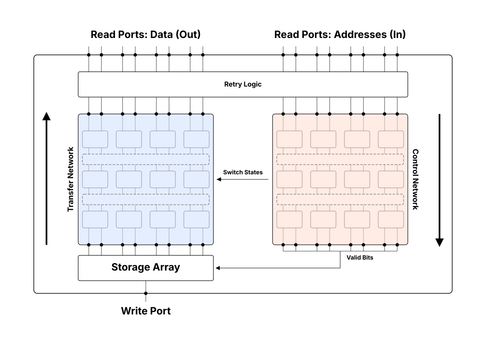
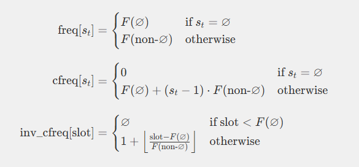
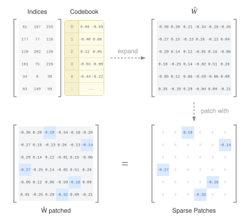

Improving Memory Efficiency in LLM Inference
Three Proposals for the Next-Gen of Inference
Hello! 👋
I'm a junior engineer in the semiconductor industry. Recently, inspired by the ongoing DRAM crisis (directly caused by AI inference demand), I started to explore research on making LLMs more memory efficient.
My focus is on techniques that go beyond simple quantization, since I believe quantization has reached its limit. The next-gen of mass-scale LLM inference will need different tools.
This page documents some of my efforts. I focus on codebook compression of LLM weights, and unstructured KV cache pruning.
- Echo Cache provides the hardware to decompress codebook indices at high throughput
- CCPO makes codebook compression more viable by patching outlier weights
- SSrANS handles compression and decompression of unstructured sparse data
Everything builds on existing academic work — no wheels are reinvented, and each article includes code and diagrams for clear explanation.
There isn't enough DRAM in the world to feed the datacentres as is. It is absurd to think that recent radical decisions (like Micron leaving the consumer market entirely) can be sustained long term. Once the dust settles, the future of mass-scale LLMs depends on efficiency gains — be it compute or memory.
Scope and Prerequisites
These proposals span:- Hardware cache design
- Codebook compression of LLM weights
- Pruning
- Parallel/vector processors (in general)
The Proposals
1. Echo Cache

A banked cache designed for high-throughput, wide gather operations. It uses a pair of Multistage Interconnection Networks (MINs) to connect banks to virtual read ports, replacing the crossbar. Addresses travel from read ports to banks, data travels back like an echo, tracing the same path in reverse. Packet merging in the MIN enables broadcast, reducing serialization.
This is presented in the context of fast codebook lookups of LLM weights, but its a general design for a gather oriented cache.
2. Sparsity-Specialized rANS

Motivated by KV cache pruning, SSrANS is a parallel compression/decompression algorithm for unstructured sparse data. The key insight: if your data is sparse, you can replace rANS frequency table lookups with a trivially computable probability model, eliminating all irregular memory accesses and cross-lane operations. Each thread runs independently in pure SIMD fashion.
This is particularly useful for TPU hardware, whose VPU is unfriendly to bitmap compression schemes due to slow scatter/gather.
3. Codebook Compression with Patched Outliers

Codebook compression struggles with outlier weights because an entire code (multiple weights) must be adjusted to accommodate one outlier. Inspired by SpQR, I show that storing a small fraction of weights as literals instead of codebook indices significantly reduces output error — patching just 5% of weights removes 50% of the error in my single-layer experiment.
The sparse patches can be intermixed into the index stream and decoded with entropy coding (akin to SSrANS), so the full decompression pipeline stays compact and free of irregular memory access. This is the piece that makes codebook compression more viable.